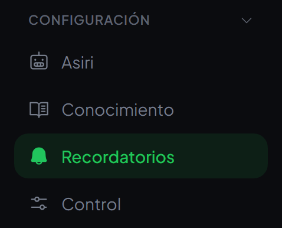
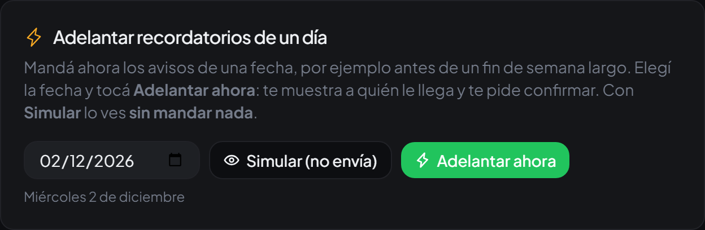
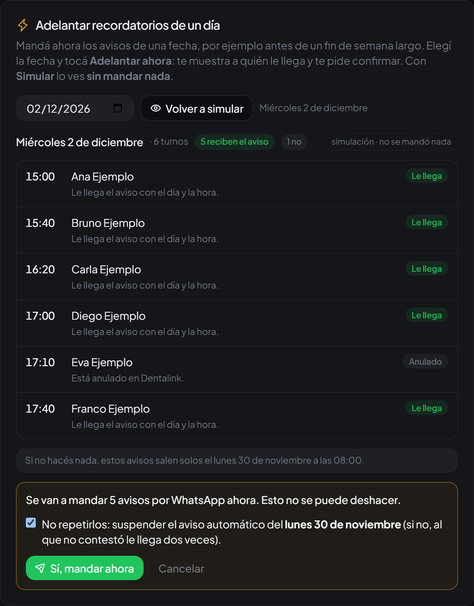
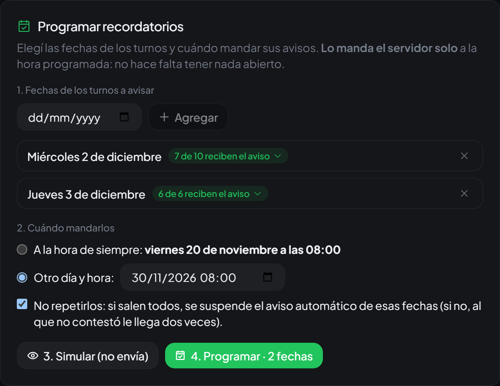
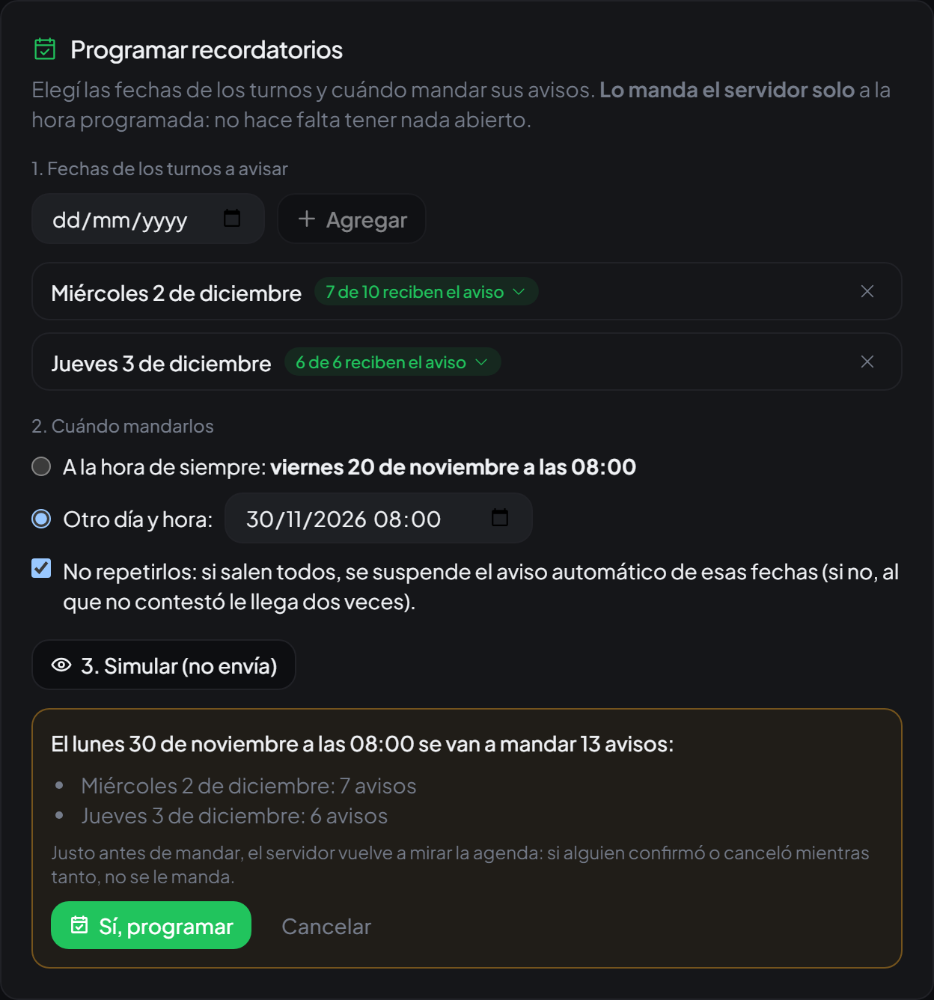
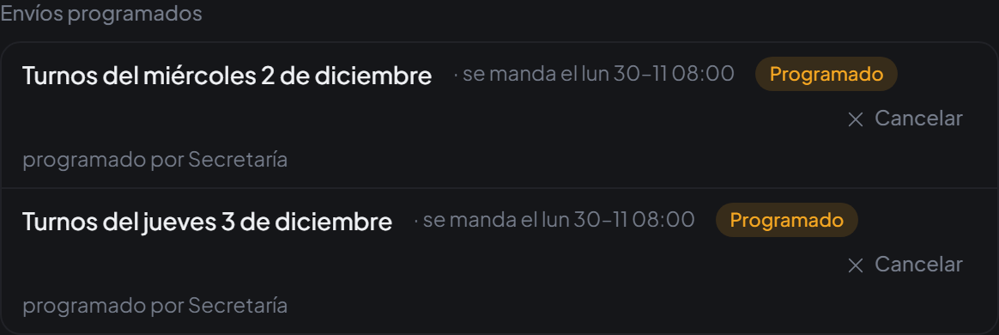

Asiri manda solo el aviso de cada turno a las 08:00. Para feriados, puentes o cuando quieren confirmar antes, hay dos opciones en el panel.


12
3Ejemplo: hoy dejás programado que el lunes 30 a las 08:00 salgan los avisos de los turnos del miércoles 2 y del jueves 3.

1234
5
6